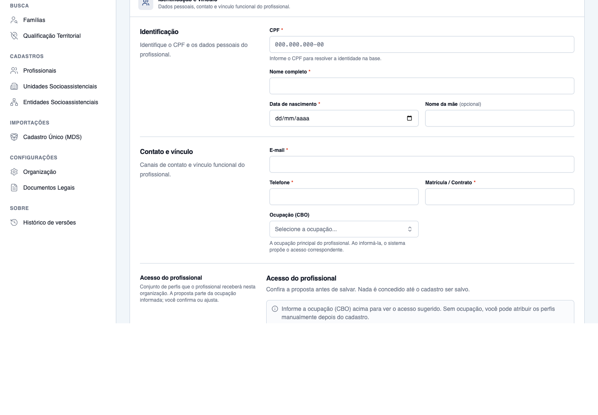
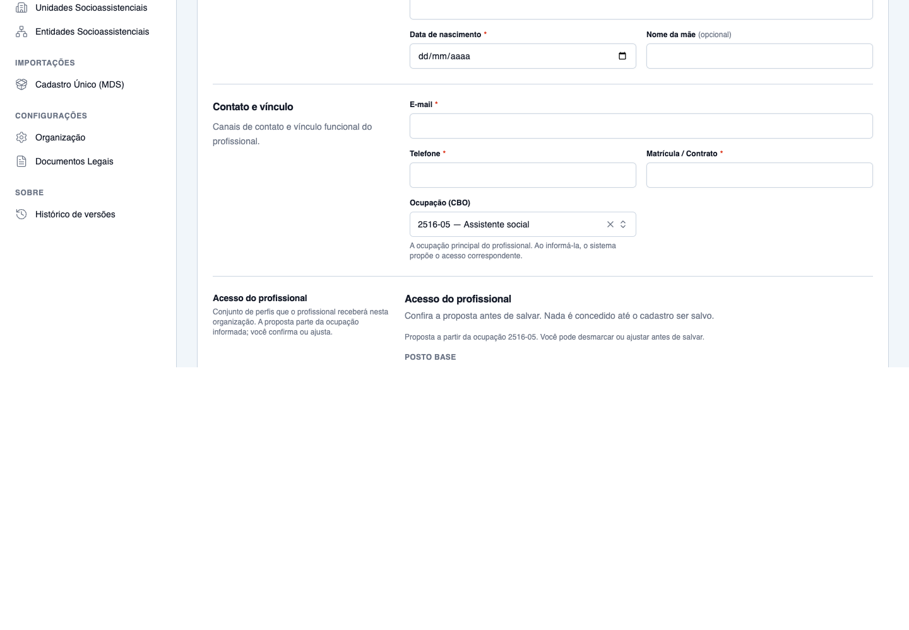
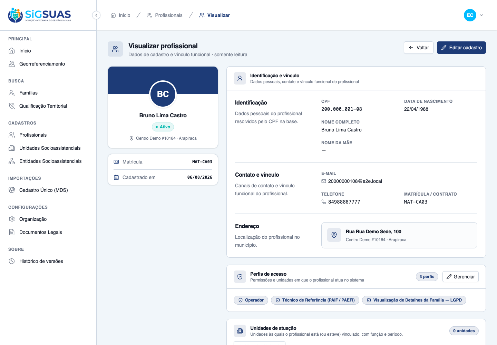
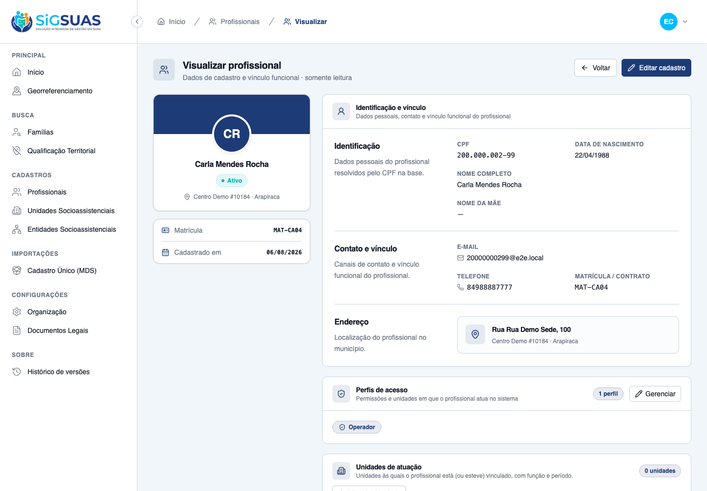
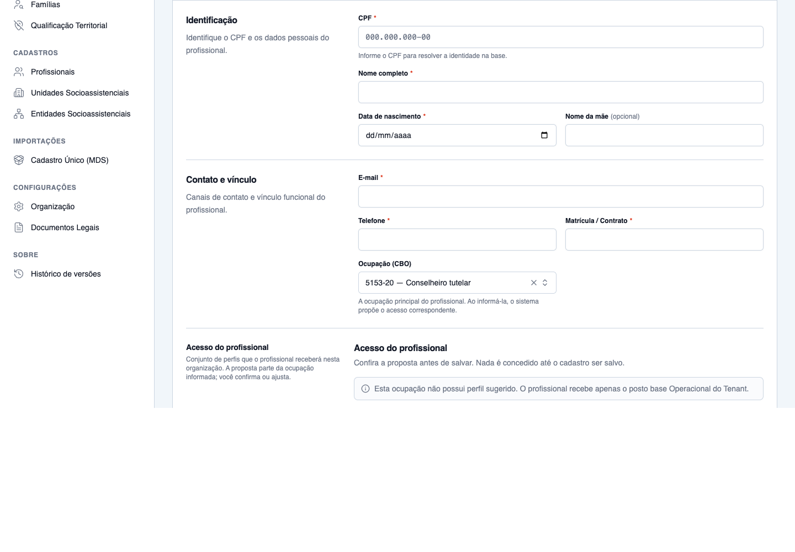

Os 8 critérios de aceite da HU #10344 foram verificados: 4 diretamente no navegador (CA01, CA03, CA04, CA05), 1 combinado — proposta conferida na tela e o salvamento pelo contrato (CA02) — e 3 pelo contrato da API somado à suíte automatizada (CA06, CA07, CA08). Todos atendidos. Somam-se 3 seções complementares (RN09, RN10, RN11). A captura encontrou e corrigiu um defeito real: o endpoint relacional de CBOs devolve um resource enxuto sem uuid, de modo que a chave cbo_uuid nunca era resolvida e a sugestão jamais carregava na tela — o contrato passou a aceitar cbo_id. A varredura do CA08 também confirmou, com dado real, o RISCO-02 registrado na spec. Apêndice: 19 testes Pest verdes.
| CA | Critério | Status |
|---|---|---|
| CA01 | Sugestão aparece pré-marcada ao informar o CBO | ATENDIDO · navegador |
| CA02 | Add-on LGPD aparece sugerido e desmarcado | ATENDIDO · navegador + automatizado |
| CA03 | Confirmação afirmativa do add-on registra a origem | ATENDIDO · navegador |
| CA04 | Master recusa a sugestão | ATENDIDO · navegador |
| CA05 | CBO sem entrada no mapa | ATENDIDO · navegador |
| CA06 | Salvar somente add-on é recusado | ATENDIDO · automatizado |
| CA07 | Isolamento entre tenants | ATENDIDO · automatizado |
| CA08 | Nenhum dado pessoal em texto livre | ATENDIDO · automatizado |
| RN10 | Complementar — sugestão é MASTER-only e não vaza o mapa global | ATENDIDO · automatizado |
| RN09 | Complementar — a sugestão nunca contém o posto Master | ATENDIDO · automatizado |
| RN11 | Complementar — mudar a ocupação não reprocessa o acesso | ATENDIDO · automatizado |
Critério (Gherkin): Dado que o Master está cadastrando um profissional no seu tenant e o CBO 2516-05 (Assistente social) está mapeado ao perfil "Técnico de Referência", quando o Master informa esse CBO, então o perfil "Técnico de Referência" é apresentado já marcado, junto com o posto base Operacional do Tenant, e a tela indica que a marcação veio da ocupação informada.
Como foi testado: Autenticado como Master no Painel do Tenant, abrir Profissionais → Novo e selecionar a ocupação 2516-05 — Assistente social no combobox Ocupação (CBO). A seção Acesso do profissional carrega a proposta via GET client/professionals/role-suggestion.


Critério (Gherkin): Dado o mesmo cadastro do CA01, cujo perfil sugerido inclui `family_viewer` como sugestão, quando a proposta é exibida, então o add-on "Visualização de Detalhes da Família — LGPD" aparece visível e desmarcado; e quando o Master salva sem marcá-lo, então o profissional é criado sem acesso ao prontuário familiar completo.
Como foi testado: Parte visual: conferir o grupo Acessos sensíveis (LGPD) na mesma tela do CA01. Parte de salvamento: cadastro concluído com o conjunto pré-marcado, sem tocar no add-on (matrícula MAT-CA02).
Critério (Gherkin): Dado o mesmo cadastro, quando o Master marca `family_viewer` e salva, então o acesso ao prontuário familiar é concedido no tenant ativo e uma entrada de auditoria é registrada com usuário que concedeu, tenant, profissional beneficiado, papel concedido, indicação de que a origem foi a sugestão da ocupação e o momento da concessão.
Como foi testado: Cadastro concluído com o add-on marcado (matrícula MAT-CA03) e conferência da seção Perfis de acesso na tela do profissional, mais a trilha em activity_log.

Critério (Gherkin): Dado um cadastro com o perfil "Técnico de Referência" pré-marcado, quando o Master desmarca o perfil e salva, então o profissional é criado apenas com o posto base Operacional do Tenant, sem os módulos do perfil, e a auditoria registra que a sugestão da ocupação foi retirada pelo Master.
Como foi testado: Cadastro concluído com o perfil funcional e o add-on desmarcados, mantendo apenas o posto base (matrícula MAT-CA04).

Critério (Gherkin): Dado o CBO 5153-20 (Conselheiro tutelar), que não possui entrada no mapa, quando o Master o informa no cadastro, então nenhum perfil funcional é pré-marcado, nenhum add-on é sugerido, a tela informa que a ocupação não possui perfil sugerido, e salvar cria o profissional com o posto base Operacional do Tenant e nenhum módulo operacional.
Como foi testado: Selecionar 5153-20 — Conselheiro tutelar — o CBO deliberadamente mantido fora do mapa pela HU #10343 (RN11 daquela HU).

Critério (Gherkin): Dado um cadastro em que o Master marcou `family_viewer` e removeu o posto base Operacional do Tenant, quando ele tenta salvar, então o sistema recusa com 422, nenhum vínculo é criado, e a mensagem informa que papel add-on exige posto base.
Como foi testado: Submissão direta de POST client/professionals com role_ids: [family_viewer] — a UI mantém o posto base disponível, então o caso é provocado no contrato. A regra reusa UserTenantRoleSyncService::assertResultingSetHasBasePost() (GLPI #10141).
Evidência por cobertura automatizada — ver Anexo.
Critério (Gherkin): Dado um Master do tenant A, quando ele tenta acessar por identificador o cadastro de um profissional pertencente ao tenant B, então a API responde 404.
Como foi testado: Com a sessão do Master do tenant "E2E CadÚnico", requisitar por uuid REAL um profissional do tenant 1.
Evidência por cobertura automatizada — ver Anexo.
Critério (Gherkin): Dado um cadastro de profissional contendo CPF e telefone, quando o cadastro é salvo com sucesso ou recusado por erro de validação, então nenhum registro de acompanhamento e nenhuma mensagem apresentada ao usuário contém o CPF ou o nome completo do profissional em texto livre.
Como foi testado: Varredura de todos os registros de activity_log com log_name = tenant_professional, buscando os CPFs e nomes completos usados nos cadastros deste dossiê.
Evidência por cobertura automatizada — ver Anexo.
Critério (Gherkin): A sugestão é atribuição do Master; o mapa global (#10343) permanece inalcançável pelo guard client.
Como foi testado: Testes de permissão ProfessionalRoleSuggestionMasterOnlyTest (apêndice).
Evidência por cobertura automatizada — ver Anexo.
Critério (Gherkin): A proposta apresentada contém sempre e apenas o posto Operacional do Tenant como base.
Como foi testado: Teste que injeta uma entrada de mapa contendo (indevidamente) o posto Master e consulta a sugestão.
Evidência por cobertura automatizada — ver Anexo.
Critério (Gherkin): Alterar a ocupação de um profissional já cadastrado não altera, revoga nem re-sugere acesso.
Como foi testado: Teste que altera o cbo_id de um profissional já cadastrado e confere os vínculos.
Evidência por cobertura automatizada — ver Anexo.
PASS Tests\Feature\Api\Client\ProfessionalRoleSuggestionTest ✓ it CA01: apresenta posto base e perfil funcional PRE-MARCADOS 0.42s ✓ it CA02: apresenta o add-on LGPD visivel porem DESMARCADO 0.03s ✓ it CA02: salvar sem marcar o add-on NAO concede acesso ao prontuari… 0.04s ✓ it CA03: marcar o add-on concede o acesso e registra a origem da su… 0.03s ✓ it CA04: recusar a sugestao cria so o posto base e audita a retirad… 0.03s ✓ it CA04: papel fora da sugestao e registrado como manually_added 0.03s ✓ it CA05: CBO sem entrada devolve 200 com o padrao minimo, nao erro 0.02s ✓ it CA05: salvar com CBO nao mapeado cria o profissional so com o po… 0.02s ✓ it CA06: recusa 422 ao salvar conjunto composto SO por add-on 0.02s ✓ it CA07: profissional de outro tenant responde 404 0.02s ✓ it CA08: a trilha NUNCA registra o CPF em claro 0.02s ✓ it RN10: o Operador do tenant NAO acessa a sugestao (403) 0.02s ✓ it RN13: recusa a sugestao de um CBO inativo 0.02s ✓ it RN09: a sugestao nunca inclui o posto Master 0.02s ✓ it RN12: cadastro sem ocupacao segue funcionando (contrato legado r… 0.02s ✓ it RN11: alterar a ocupacao grava o novo CBO sem reprocessar o aces… 0.03s PASS Tests\Feature\Permissions\ProfessionalRoleSuggestionMasterOnlyTest ✓ it keeps professionals.role-suggestion master-only 0.66s ✓ it never leaks cbo-access-profiles into the client guard 0.65s ✓ it keeps permission coverage green (no authenticated route without… 0.01s Tests: 19 passed (97 assertions) Duration: 2.43s